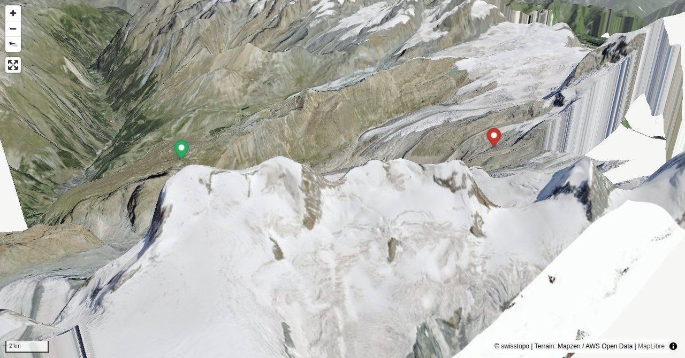

The second half of the normal approach to the Monte Rosa hut SAC is not a normal alpine hike, but a glacier tour: crampons, harness, rope and ice axe are essential. The approach is well marked white-blue-white, bars are placed on the glacier. With glacier shrinkage, the transition to the glacier and the route over it varies from year to year. In summer 2019 a new route, the "Panoramaweg Monte Rosa Hütte", was added, which is about quarter an hour shorter than the old way.
Quick Facts
| Summit elevation | 2883 m |
|---|---|
| Difficulty | SAC T4 Alpine hiking with exposure, rougher terrain, and sections that are not suitable for beginners. Guide |
| Trailhead | Rotenboden |
| Distance | 8.7 km (out-and-back) |
| Total ascent | ~361 m |
| Elevation range | 2636-2917 m |
| Route sources | SAC Route Portal |
Photos


Route Map & Elevation
i
i
sac_scale (precise T1–T6) with
swissTLM3D Wanderwegart
fallback where OSM is silent (coarser T2/T3 and T4+ buckets).
Coverage: OSM 94.3% · swisstopo 2.1% · unknown 0.0%.Elevations computed from the inlined GPX track (SwissTopo height API).
Loading forecast…
3D Terrain View

Route Details
From Rotenboden via the Gornergletscher
Terrain & safety
In the second part, the glacier tour (difficulty level L): crampons, ice axe, rope, and harness are essential equipment!
Source: SAC Route Portal
Getting There & Back
Start: Rotenboden (2816 m)
Directions from to Rotenboden
Route returns to Rotenboden.
Zahnradbahn to Rotenboden.
Information about the cable car Zermatt - Rotenboden: https://www.gornergratbahn.ch/de/sommer/bahninformationen/
Field Reference
| Trailhead | Rotenboden | 45.98439, 7.76530 |
|---|---|---|
| Summit | Monte-Rosa-Hütte SAC (2883 m) | 45.95792, 7.82323 |
| Waypoint | Monte-Rosa-Hütte SAC (2883 m) | 45.95687, 7.81456 |
Coordinates are WGS84 decimal degrees (lat, lon). Emergency: 112 (general) or 1414 (Rega air rescue). Page URL: